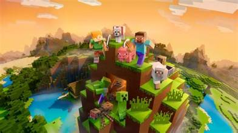
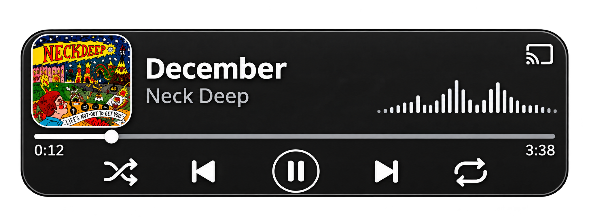
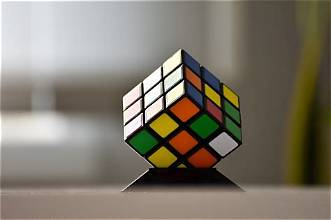
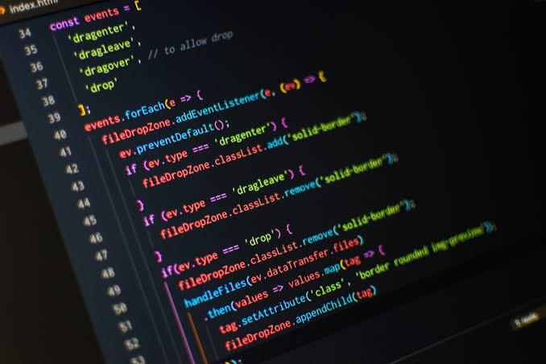

|

|
Gaming
Bermain game seperti minecraft merupakan salah satu hobi yang saya sukai.
Selain sebagai hiburan untuk mengisi waktu luang, bermain game juga dapat melatih konsentrasi, strategi,
dan kemampuan memecahkan masalah. Saya juga senang mencoba berbagai jenis game dan mendapatkan pengalaman
baru dari setiap permainan.
|
|

|
Mendengar Lagu
Mendengarkan musik merupakan salah satu hobi yang saya sukai.
Musik membantu saya menikmati waktu luang, membuat pikiran lebih rileks, dan meningkatkan suasana hati.
|
|

|
Bermain Rubik
Bermain rubik merupakan hobi yang melatih konsentrasi,
kesabaran, dan kemampuan berpikir. Saya senang mencoba menyelesaikan rubik dengan berbagai kombinasi.
|
|

|
Coding
Coding merupakan hobi yang melatih logika, kreativitas, dan kemampuan memecahkan masalah.
Saya senang mencoba membuat program baru dan mengembangkan keterampilan pemrograman.
|
| © 2026 Laurensius Brian Surya Arianto |
|